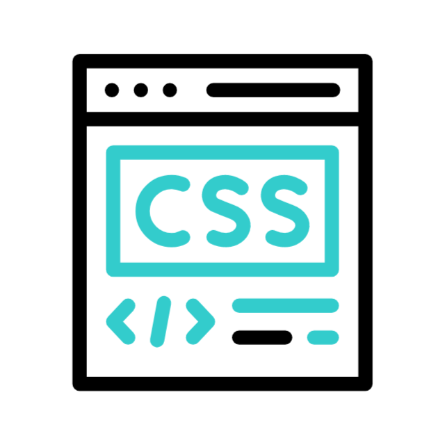
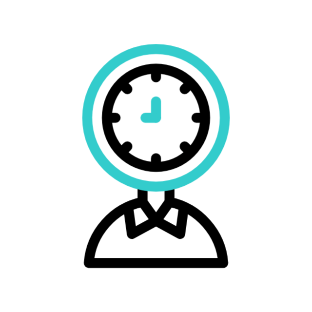
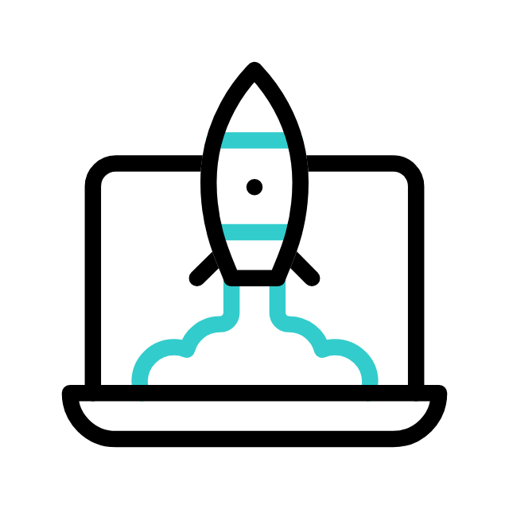

Habilidades
Estas son las tecnologías y herramientas con las que trabajo:

HTML
Estructura semántica y accesible.

CSS
Flexbox, Grid, animaciones y diseño responsivo.
JavaScript
Manejo del DOM, eventos y lógica interactiva.

Gestión de tiempo
Planificación y priorización para cumplir objetivos a tiempo.

Animations
Transiciones, transformaciones, animaciones suaves para mejorar experiencia.
Resolución de problemas
Pensamiento lógico y enfoque práctico para resolver retos técnicos.